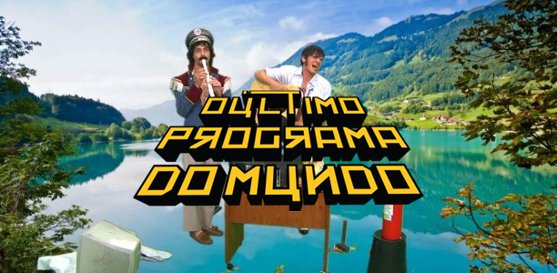

isso é um easter egg parabens ou nao pela descoberta!
ja que ce ta aqui clica na imagem pra ver um programa muito bom pra quem gosta do genero non-sense
deixo aqui que nao me responsabilizo caso ache apenas ok essa masterpiece
unico programa onde pra mim todas as opinioes contrarias sao irrelevantes